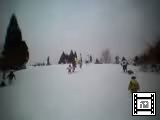
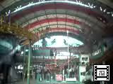
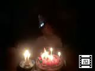
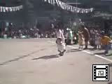
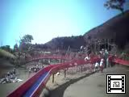
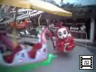
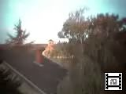
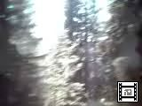
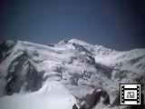
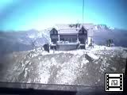

由起子のビデオ(No91-100) |
 |
2002年1月13日 14時54分撮影 (101KB) スキー場デビューは「函館山」。 なだらかな斜面をソリで滑り降ります。 気持ちイイーーー！！ |
 |
2001年12月31日 15時12分撮影 (151KB) 白浜アドベンチャーワールドにて。。。 初めて乗ったジェットコースターに大興奮！ 結構スピードがあるので、周りがハラハラしました。 |
 |
2001年12月24日 19時35分撮影 (359KB) おじいちゃん・おばあちゃんちでクリスマス会。。。 保育所で何度も練習した♪赤鼻のトナカイ♪を はりきって歌いました。 途中まで上手に歌えてましたが、最後の歌詞の部分を 間違えちゃいました（笑）！ |
 |
2001年10月14日 9時34分撮影 (159KB) 由起子の運動会での「親子競技」。ママも由起子も 存分に楽しみました。由起子の衣装がアヒルさんに なっているのです。とっても可愛いんでっす！ |
 |
2001年9月23日 13時35分撮影 (103KB) 榛原の公園にある由起子がお気に入りの長〜い すべり台。大人の人も滑り降りてるので、ママも チャレンジしました。うん、癖になりそう！！ |
 |
2001年8月16日 18時10分撮影 (139KB) 一人で乗れるんだぁ。。。成長したなぁ。。。 絶対怖がると思っていたのに、悠々としたものです。 日本より、スピードがあります。ママは見てるだけで 目が回りそう！！ |
 |
2001年8月16日 7時5分撮影 (227KB) ブルゴーニュ地方／シャンベルタンで迎えた朝。 ブドウ畑と教会の鐘の音が、幻想的でした。 |
 |
2001年8月13日 12時32分撮影 (501KB) スイスの国境に入り「エモッソン湖」へ。 ケーブルカー→パノラマ列車→ケーブルカー・・・ 眺めは期待以上のものでした。 |
 |
2001年8月12日 12時37分撮影 (165KB) 展望台からモンブラの頂上を眺めています。 展望台の高さは、３８４２ｍ。富士山より高いのです。 空気が薄いので、長時間居ると苦しいかも?! |
 |
2001年8月12日 11時36分撮影 (171KB) エギーユ・デュ・ミディのロープウェーに乗っています。 氷河が目の前に・・・ 一面の雪景色がとっても綺麗！ |